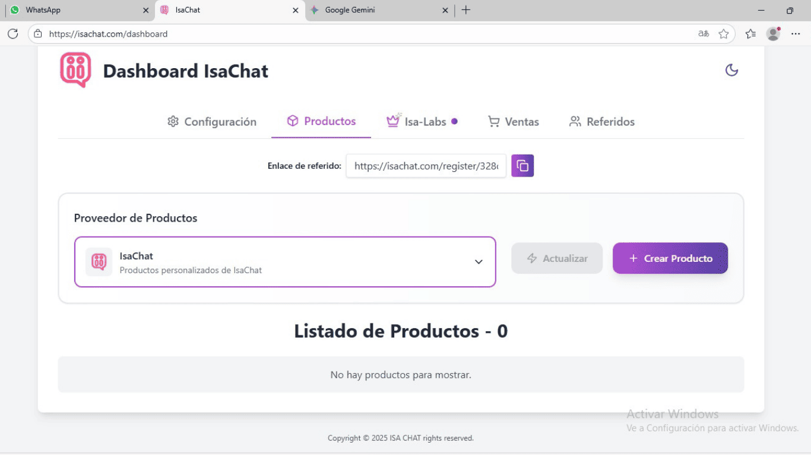

<!-- Guía Visual: Creación de Productos -->
<section class="section bg-light" id="guia">
    <div class="container">
        <h2 class="section-title">Guía Visual: Creación de Productos</h2>
        <p class="section-subtitle">Te mostramos paso a paso cómo crear productos y organizarlos de forma efectiva en IsaChat.</p>
        
        <!-- Lista de Pasos -->
        <div class="guia-steps">
            <!-- Sección 1: Crear Producto -->
            <div class="product-section">
                <div class="product-preview">
                    <div class="step-info">
                        <h3>1. Crear Nuevo Producto</h3>
                        <p>Para comenzar, accede a la sección de "Gestionar Productos" en el menú principal y haz clic en el botón "+ Crear Producto".</p>
                    </div>
                    <button class="expand-btn" aria-expanded="false">
                        <span class="btn-text">Ver más</span>
                        <svg class="chevron-icon" xmlns="http://www.w3.org/2000/svg" width="24" height="24" viewBox="0 0 24 24" fill="none" stroke="currentColor" stroke-width="2" stroke-linecap="round" stroke-linejoin="round"><polyline points="6 9 12 15 18 9"></polyline></svg>
                    </button>
                </div>
                <div class="product-content">
                    <div class="step-content">
                        
                        <div class="feature-box feature-box--warning">
                            <h4>
                                <svg xmlns="http://www.w3.org/2000/svg" width="24" height="24" viewBox="0 0 24 24" fill="none" stroke="currentColor" stroke-width="2" stroke-linecap="round" stroke-linejoin="round"><path d="M10.29 3.86L1.82 18a2 2 0 0 0 1.71 3h16.94a2 2 0 0 0 1.71-3L13.71 3.86a2 2 0 0 0-3.42 0z"></path><line x1="12" y1="9" x2="12" y2="13"></line><line x1="12" y1="17" x2="12.01" y2="17"></line></svg>
                                Importante: Nombres de Productos
                            </h4>
                            <p>Al crear tus productos, asegúrate de que los nombres sean descriptivos y únicos. Por ejemplo, si tienes varios modelos de un producto, usa nombres como "Zapatillas Deportivas Azules" en lugar de solo "Zapatillas".</p>
                        </div>
                    </div>
                </div>
            </div>

            <!-- Sección 2: Añadir Imagen -->
            <div class="product-section">
                <div class="product-preview">
                    <div class="step-info">
                        <h3>2. Añadir Imágenes</h3>
                        <p>Sube imágenes de alta calidad que muestren claramente tu producto. Puedes subir hasta 15 fotos por producto.</p>
                    </div>
                    <button class="expand-btn" aria-expanded="false">
                        <span class="btn-text">Ver más</span>
                        <svg class="chevron-icon" xmlns="http://www.w3.org/2000/svg" width="24" height="24" viewBox="0 0 24 24" fill="none" stroke="currentColor" stroke-width="2" stroke-linecap="round" stroke-linejoin="round"><polyline points="6 9 12 15 18 9"></polyline></svg>
                    </button>
                </div>
                <div class="product-content">
                    <div class="step-content">
                        
                        <div class="feature-box feature-box--tip">
                            <h4>
                                <svg xmlns="http://www.w3.org/2000/svg" width="24" height="24" viewBox="0 0 24 24" fill="none" stroke="currentColor" stroke-width="2" stroke-linecap="round" stroke-linejoin="round"><circle cx="12" cy="12" r="10"></circle><line x1="12" y1="16" x2="12" y2="12"></line><line x1="12" y1="8" x2="12.01" y2="8"></line></svg>
                                Consejos para las Imágenes
                            </h4>
                            <ul>
                                <li>Usa imágenes con buena iluminación</li>
                                <li>Evita fondos distractores</li>
                                <li>Muestra el producto desde varios ángulos</li>
                                <li>Asegúrate de que la imagen sea clara y nítida</li>
                            </ul>
                        </div>
                    </div>
                </div>
            </div>
        </div>
    </div>
</section>